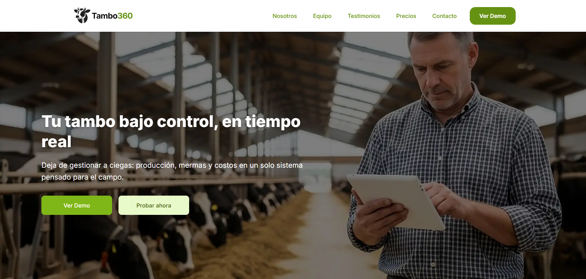
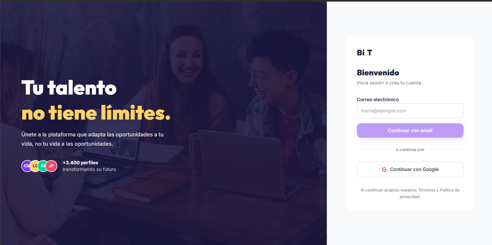
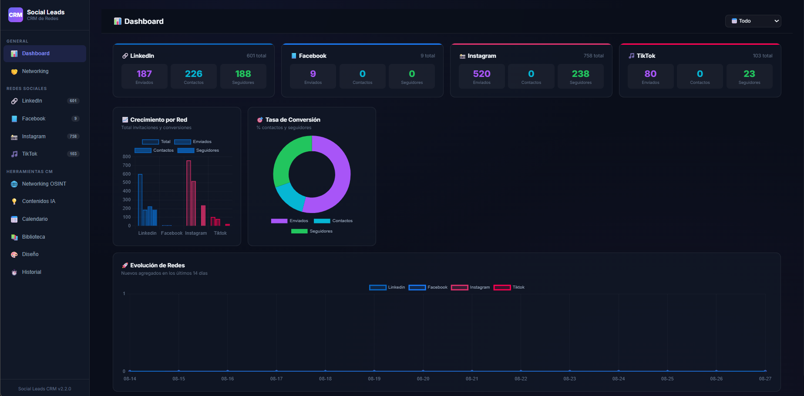

En estos proyectos aplico distintas perspectivas de Producto,
Project Management, QA, UX e IA para transformar problemas en
soluciones que puedan construirse, validarse y evolucionar.
No todos los proyectos representan el mismo tipo de experiencia.
Por eso los presento diferenciando proyectos profesionales,
personales y de aprendizaje.
Proyectos destacados
Tambo360
Tipo: Proyecto profesional
Contexto:
SaaS B2B orientado a productores de leche, creado para
transformar información operativa dispersa en datos útiles
para la toma de decisiones.
Mi rol: Product Project Management.
Qué hice:
Participé en Product Discovery, definición del MVP,
User Stories, User Story Mapping, priorización,
organización del trabajo y definición de criterios
para validar las funcionalidades.

Tambo360: transformar información operativa en información útil para decidir.
Resultado:
Se definió una estructura funcional de MVP y un conjunto
de funcionalidades orientadas a resolver problemas
concretos de registro, seguimiento y toma de decisiones.
Aprendizaje:
Un producto no comienza con una funcionalidad.
Comienza entendiendo qué problema vale la pena resolver.
BiT
Tipo: Proyecto profesional
Contexto:
Proyecto digital en el que participé trabajando sobre
decisiones de producto, necesidades de usuario y
coordinación interdisciplinaria.
Mi rol: Product Project Management.
Qué hice:
Participé en el análisis de necesidades, definición
de funcionalidades, evaluación de riesgos y discusión
de decisiones relacionadas con la experiencia del usuario.

BiT: decisiones de producto centradas en usuario, riesgo y valor.
Resultado:
Se trabajó sobre la definición y evolución de funcionalidades
considerando las necesidades del usuario y las condiciones
de implementación.
Aprendizaje:
Una buena decisión de producto no depende solamente de
encontrar una solución, sino de entender qué consecuencias
tiene esa solución para el usuario y el equipo.
CRM + IA
Tipo: Proyecto personal
Contexto:
Proyecto propio nacido de una necesidad de organización
y gestión de información que anteriormente resolvía
mediante herramientas dispersas.
Mi rol: Product Manager, Project Manager y responsable de la experimentación con IA.
Qué hice:
Identifiqué el problema, definí la solución, estructuré
funcionalidades, experimenté con herramientas de IA
y participé en la construcción y validación del producto.

CRM + IA: un experimento para convertir una necesidad propia en un producto digital.
Resultado:
Se construyó un prototipo funcional que permitió experimentar
con datos, dashboard, automatizaciones e inteligencia artificial.
Aprendizaje:
La IA puede ampliar mis capacidades de construcción y
experimentación, pero las decisiones de producto siguen
necesitando criterio humano.
Otros proyectos
Primarket
Proyecto orientado a la distribución de materias primas,
en el que trabajé sobre investigación, User Stories,
organización del flujo de trabajo y estructura del producto.
Tecniclick
Proyecto de producto digital orientado a conectar usuarios
con profesionales verificados para servicios de mantenimiento
del hogar. Se trabajó sobre investigación de usuarios,
validación de mercado y definición de funcionalidades.
App de pedidos
Proyecto de práctica de Project Management enfocado en
coordinar el desarrollo de una aplicación de pedidos,
organizar tareas y acompañar la ejecución del equipo.